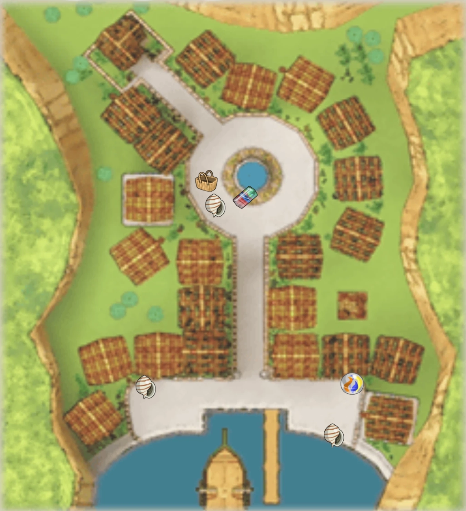

Walkthrough Part 1
Introduction
Upon starting a new game, a dog named El Dorado arrives at the port of Puroro Town with a letter for the new mail man, Mr. Postman. The letter got wet and the address is smudged, so Mr. Postman asks a dog named Donatello for help reading it. Donatello recognizes the address as belonging to your house, which opens initial character customization: your dog's breed, gender, and name. Donatello will also mention your character has either a brother or a sister, depending on your choice. Donatello will start to trail off on a story about your father, but Mr. Postman cuts him off and thanks him for his help, heading towards your house.
Inside your house, you wake up and greet your mom, Mar, and your sibling (Emilio if a brother, Maria if a sister). Mar remarks that your sibling's condition is improving, then starts to prepare breakfast only to realize the milk delivery hasn't arrived. She asks you to head to the Milk store to pick some up. Head down and out through the door to town. Mar sees you off, then notices a letter on the doorstep and takes it inside to read.
Puroro Town

| Items | |
|---|---|
| Basket | West of the fountain (Only during Help the Milk Man) |
| Beautiful Stone | South of the fountain |
| Colored Glass | Southeast of town, in the corner near the houses |
| Medicinal Herb | Inside your house, near the table |
| Milk | From Enzo after completing Help the Milk Man |
| Spiral Shell |
|
At this point the game gives you a tutorial on camera controls. Feel free to explore the town and talk to other dogs to get oriented with the controls. When you're ready to continue, talk to Enzo, the dog with the floating question mark above his head. These question mark bubbles indicate dogs with tasks for you.
Help the Milk Man
Enzo is surprised to hear the milk hasn't been delivered, as it was supposed to be his son's job today. He's about to bring the milk to your house himself, but realizes his delivery Basket is missing. You offer to find it for him. The game will teach you about sniffing, the main mechanic used to search for items, as well as the Diary in your menu, which tracks your active quests.
The Basket is on the other side of the fountain. While you're sniffing, you can also grab the Beautiful Stone and the Colored Glass. The Beautiful Stone is also right next to the fountain, and the Colored Glass is near Donatello by the docks. Return the Basket to Enzo, and he'll reward you with a Woof, the game's currency. Enzo offers to make the deliveries, but you tell him you'll bring the Milk home yourself, and he apologetically hands it over.
With nothing else to do for now, head home. Mr. Postman stops you on the way to teach you about saving. You can only save at dedicated areas, so save often!
Continue home and bring the Milk to Mar. Your sibling asks if they can go to the festival tonight, and Mar agrees, on the condition that they drink their Milk and their condition doesn't worsen. Excited, your sibling says they'll go with you that evening. By sundown, though, they're stuck in bed despite their protests. Mar won't let them leave, but tells you she'll look after them and sends you to the festival alone. Before you go, sniff near the table to find a Medicinal Herb. When you leave the house, your friends Viviana and Amedio try to cheer you up. Just then, the three of you spot shooting stars overhead. Donatello, however, worries it's a bad omen. Meanwhile, your sibling wakes to find Mar asleep and sneaks out of the house...
Treasure Hunt
There are a few characters to talk to at the festival. When you're ready to continue, talk to Gustavo near the fountain. He's holding a treasure hunt contest as the festival's main event, and you're invited to join! To win, you need to sniff out three Spiral Shells around town and bring them back before anyone else. As he starts the countdown, he notices your sibling standing behind you.
You're annoyed they followed you despite being sick, but they promise to just watch the contest and go straight home, so you begrudgingly agree. With that settled, Gustavo starts the clock, though there's no actual time limit, and no risk of anyone else beating you to the Spiral Shells, so you can take your time and collect them in any order.
One Shell is nearby, in front of El Dorado. Head toward the dock for the other two. One is near Donatello, close to the water's edge, and the other is across the dock by Amedio.
Once you have all three, return to Gustavo for your prize, a beautiful flower bouquet. While you and your friends celebrate, El Dorado remarks that you sniff as well as your missing father, Doluk. When your sibling learns you're giving them the prize, they get excited and start running around, only to suddenly collapse. El Dorado calls for a doctor, then carries your sibling home.
Departing from Home
The doctor tells Mar that your sibling, now bedridden, will never get any better than they are now. When Mar asks if there's truly no cure, the doctor mentions a dog on THE DOG Island named Dr. Potan who may be able to help, but your sibling is in no condition to travel, and even reaching THE DOG Island is dangerous due to a recent string of storms.
After the doctor leaves, you tell Mar you plan to go to THE DOG Island yourself to bring Dr. Potan back. She argues, not wanting to lose you the way she lost your father, but your mind is made up. Seeing your resolve, El Dorado offers to take you aboard his ship in exchange for your work during the voyage.
The next morning, you say good-bye to your worried family and friends. With one last look back, you set off on your journey to THE DOG Island.